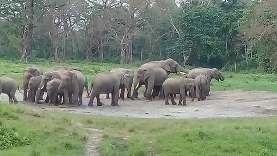
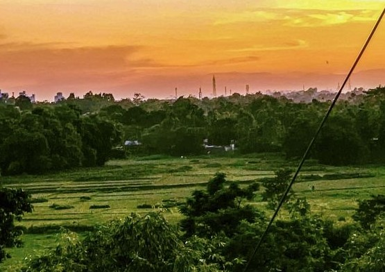

About Jalpaiguri
Jalpaiguri, located in the northern part of West Bengal, is a melting pot of cultures due to its diverse population and strategic location near the borders of Bhutan and Bangladesh. The district's cultural significance stems from its mix of indigenous tribal cultures, Bengali traditions, and influences from neighboring countries. The region celebrates various festivals such as Poush Mela, which showcases the local handicrafts, folk music, and traditional dances. The tea gardens in Jalpaiguri also contribute to the cultural identity of the area, as they have been an integral part of its history and economy.

